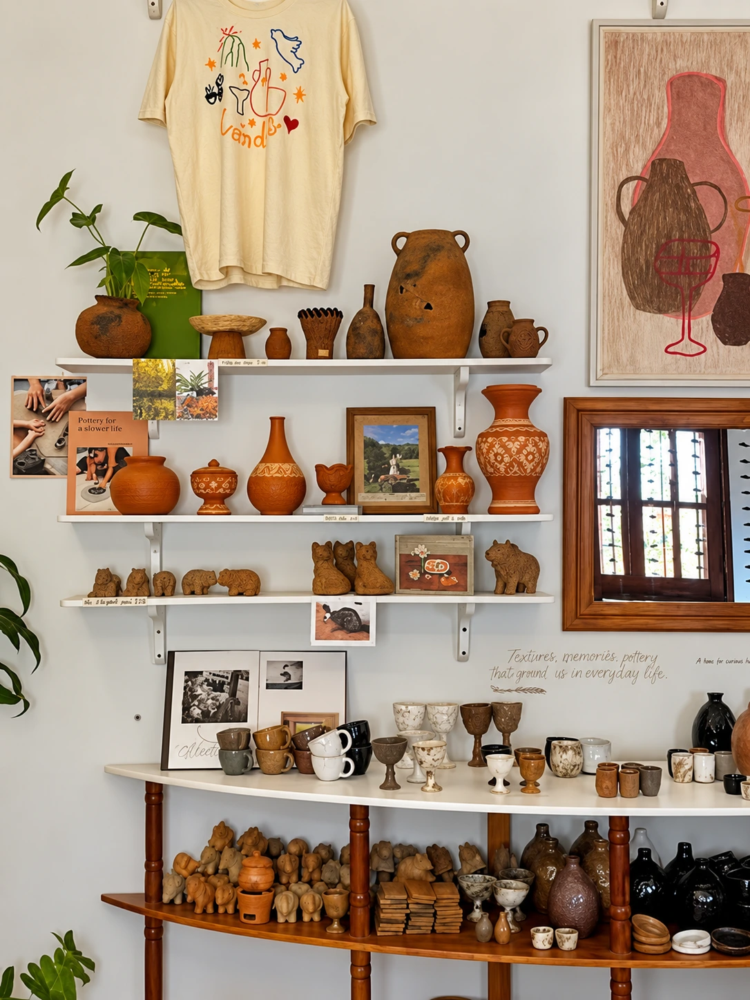

Studio class · Veranda Pottery0102
Next date to be announced
Make Your Own Pottery
Shape two pottery pieces by hand and experience the slow, tactile process of working with clay. Finished pieces are fired using a traditional Cambodian method and collected later.
Experience90 min
From$20
CollectionAfter firing
LocationAnnounced per workshop